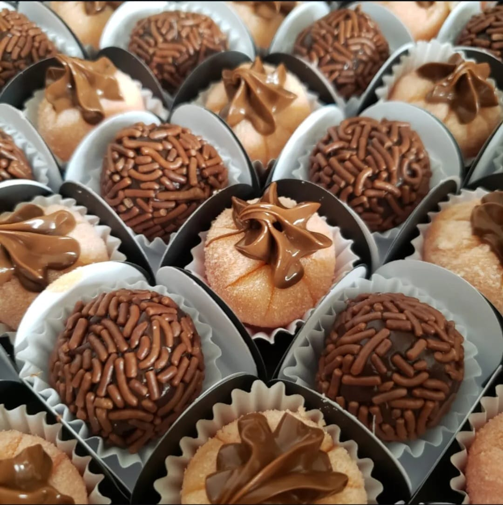
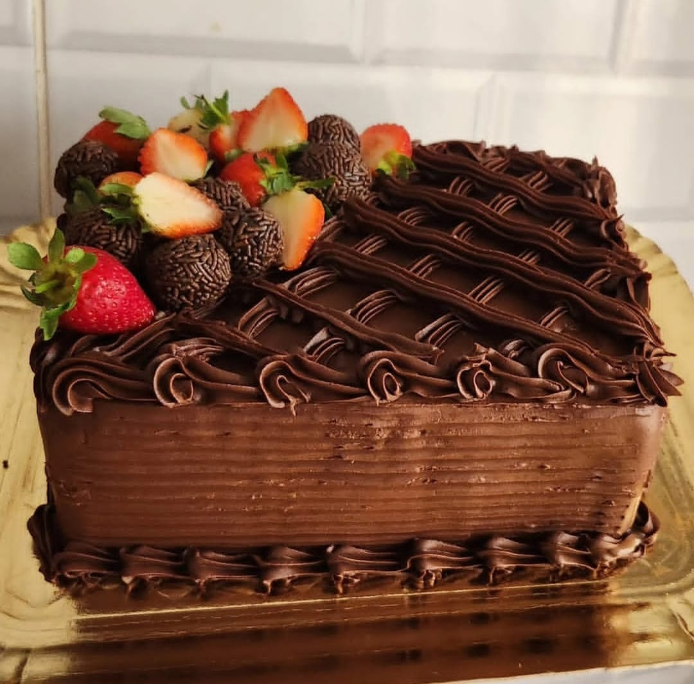

.png)
A Delícias da Paty nasceu da paixão pela confeitaria e do sonho de transformar receitas feitas com carinho em momentos especiais. O que começou como um hobby se tornou um negócio dedicado a oferecer doces artesanais de qualidade, preparados com ingredientes selecionados e muito amor.
Hoje, seguimos crescendo e conquistando cada vez mais clientes, sempre buscando inovar, aprimorar nossos produtos e levar sabor, qualidade e carinho para cada encomenda.

A missão da Delícias da Paty é adoçar a vida dos nossos clientes de forma simples, acessível e estratégica, ampliando nossa visibilidade, presença e oportunidade de crescimento para quem está começando.
Nossa visão é ser referência em confeitaria artesanal de qualidade, inovando constantemente em receitas e formatos de atendimento para levar carinho e sabor de forma marcante a cada mesa.
Nossos valores baseiam-se no amor pelo que fazemos, respeito aos nossos clientes, uso rigoroso de ingredientes selecionados e o compromisso de entregar produtos com afeto e qualidade impecável.
Na Delícias da Paty, acreditamos que cada doce é uma forma de demonstrar carinho. Por isso, utilizamos ingredientes selecionados, receitas artesanais e muito cuidado em cada etapa da produção. Nosso compromisso é oferecer produtos de qualidade que tornem cada momento ainda mais especial.
